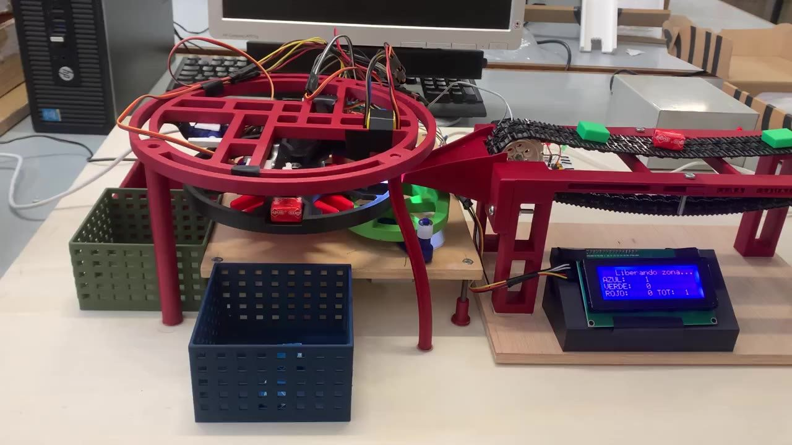

REF. 01 · Proyecto II · ETSEIB · equipo de 4
Clasificador automático por colores con Cruz de Malta
Máquina que clasifica piezas por colores. Una cinta las lleva a una plataforma que gira a pasos exactos de 90° gracias a una Cruz de Malta. En cada parada, un sensor lee el color y tres servomotores empujan cada pieza a su caja.
- Periodo
- 01/2026 – 05/2026
- Tipo
- Proyecto II · ETSEIB · equipo de 4
- Mi papel
- Coordinador del equipo
- Estado
- Terminado

- 4 × 90°
- estaciones de la Cruz de Malta
- 3
- colores clasificados
- 0,2 mm
- holgura pivote–ranura
- 5
- motores coordinados
El reto
Coordinar una alimentación continua (la cinta) con una lectura de color que necesita la pieza quieta y con una clasificación física posterior. La solución fue un mecanismo clásico: la Cruz de Malta convierte el giro continuo del motor en avances intermitentes de 90°, y durante cada pausa la plataforma queda bloqueada mecánicamente.
Cómo funciona
- Una cinta transportadora, con un motor de corriente continua con reductora y piezas LEGO, deja cada pieza en la estación de lectura.
- El sensor TCS3200 lee el color dentro de una carcasa opaca que lo aísla de la luz ambiente.
- Un motor paso a paso (driver A3967) mueve la rueda motriz. Cada vuelta hace girar la plataforma 90°, y durante los 270° restantes la mantiene bloqueada.
- El Arduino guarda el color de la pieza que hay en cada estación y activa el servo HS-422 de la estación que le corresponde.
- Una pantalla LCD muestra el color detectado y el recuento por colores. Hay un pulsador de marcha/paro y una parada de emergencia.
Diseño y fabricación
Todas las piezas propias se modelaron de forma paramétrica en SOLIDWORKS con criterios de diseño para fabricación y se imprimieron en PLA. Entre el pivote y las ranuras de la cruz se dejó una holgura de 0,2 mm para que el encaje fuera suave. Antes de imprimir, comprobamos el ensamblaje con detección de interferencias y un estudio de movimiento, para que los brazos de los servos no chocaran con el soporte del sensor.
Control
El programa en C++ sincroniza tres cosas: la lectura del sensor, el giro de la plataforma y el disparo de los servos. Para que ninguna tarea bloquee a las demás, el avance del motor paso a paso se temporiza con millis() en lugar de pausas fijas. Antes de cada uso se calibra el sensor con piezas de referencia de cada color.
Mi papel
Coordiné al equipo de cuatro personas durante todo el proyecto, desde la propuesta hasta el prototipo final y el póster.
Imágenes


